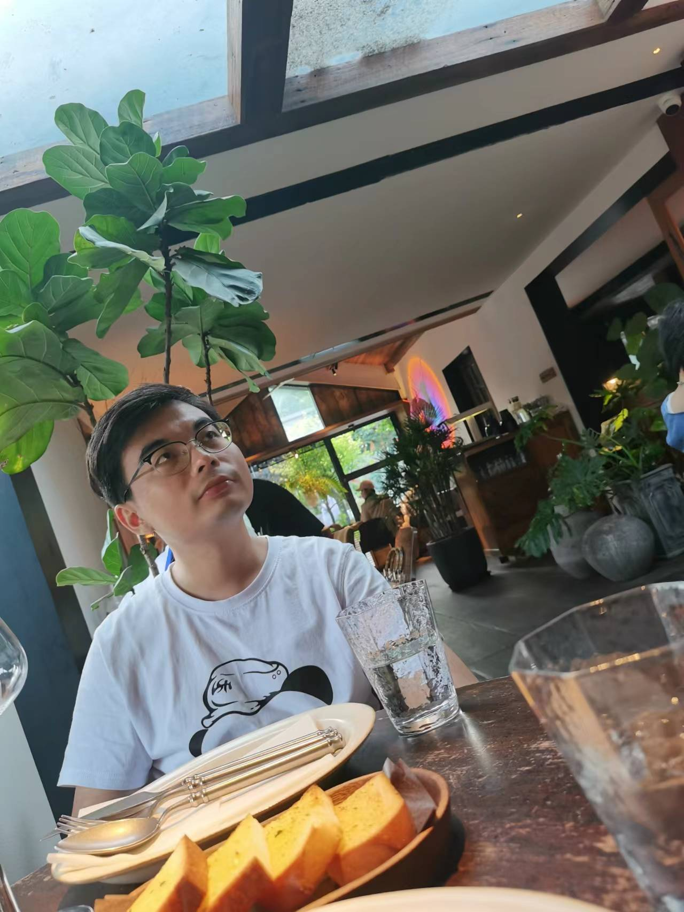

|  |
Mengqi Huang
Ph.D. student
school of Cyber Science and Engineeing
443 Huangshan Road, Hefei, China 230027
Email: huangmq@mail.ustc.edu.cn
|
Mengqi Huang is now a Ph.D. student at University of Science and Technology of China. His research interests include deep learning, image generation and cross-modality learning. He has published papers on TOP international conferences and journals (CCF-A).
Mengqi is now pursuing his Ph.D. at University of Sciecne and Technology of China since 2020 and earned B.Eng. from University of Science and Technology of China in 2011. He was an intern at Kuaishou
Paper Publications [Google Scholar]
 |
Branch Ranking for Efficient Mixed-Integer Programming via Offline Ranking-based Policy Learning
Zeren Huang, Wenhao Chen, Weinan Zhang, Chuhan Shi, Furui Liu, Hui-Ling Zhen, Mingxuan Yuan, Jianye Hao, Yong Yu, Jun Wang ECMLPKDD 2022. |
Internships
| MediaGamma Limited Research Intern, Data Science Group, supervised by Jun Wang and Rael Cline. London, United Kingdom Jun. 2015 - Aug. 2015 |
Education
| MediaGamma Limited Research Intern, Data Science Group, supervised by Jun Wang and Rael Cline. London, United Kingdom Jun. 2015 - Aug. 2015 |
Competitions
| MediaGamma Limited Research Intern, Data Science Group, supervised by Jun Wang and Rael Cline. London, United Kingdom Jun. 2015 - Aug. 2015 |
News
7 July 2022
One paper has been accepted by ACM Multimedia 2022.